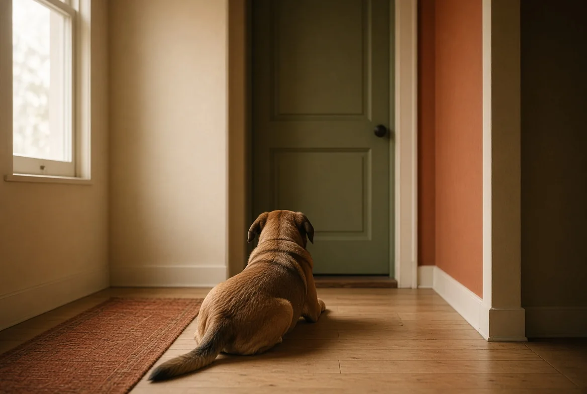

חרדת נטישה
ההרס ליד הדלת הוא לא נקמה. הכלב לא "כועס שיצאתם" ולא "מעניש אתכם" — הוא היה בפאניקה, וניסה לצאת אחריכם. ההבחנה הזאת היא לא סמנטיקה: היא קובעת אם מה שתעשו יעזור או יחמיר.
בקצרה — 40 שניות
- קודם כל תבדקו מתי זה קורה. חרדת נטישה אמיתית מתפרצת בדקות הראשונות אחרי היציאה, כמעט תמיד. משהו שמתחיל אחרי שעתיים הוא כנראה שעמום — וזו בעיה אחרת לגמרי עם פתרון אחר.
- הדרך היחידה לדעת היא להקליט. טלפון ישן על מדף, חצי שעה. זו החצי שעה שתחסוך לכם חודשים.
- זו לא בעיית אילוף אלא הפרעת חרדה. ובפאניקה אין למידה — לכן תרגילים רגילים לרוב לא עוזרים, ולפעמים מחמירים.
- הכלל שמחזיק את כל הטיפול: לא להשאיר אותו לבד יותר ממה שהוא סוחב, בזמן שעובדים. כל אירוע פאניקה מקבע את הדפוס.
- יש טיפול תרופתי, והוא לגיטימי. במקרים בינוניים ומעלה הוא מה שמאפשר לעבודה ההתנהגותית להתחיל בכלל.
1. האם זו בכלל חרדת נטישה
ארבעה מצבים שונים נראים כמעט זהים מבחוץ — הרס, נביחה, או צרכים בבית כשאתם לא שם. ההבדל ביניהם הוא הכול.
חרדת נטישה
הסימן המבחין: מתחיל תוך דקות מהיציאה, כמעט בכל פעם. מלווה בריור, בהתנשפות, בהליכה חסרת מנוחה, בהרס שמרוכז דווקא ליד הדלת או החלונות, ולפעמים בפציעה עצמית מניסיון לצאת. גם צרכים בבית אצל כלב מאולף לגמרי.
שעמום
הסימן המבחין: מתחיל מאוחר יותר ולא בכל פעם. ההרס אקראי — מה שהיה מעניין, לא בהכרח ליד היציאות. הכלב נראה רגוע בהקלטה, לפעמים אפילו ישן חלק מהזמן.
מצוקת בידוד
הסימן המבחין: הכלב לא מחפש דווקא אתכם — הוא פשוט לא סובל להיות לבד. אם מישהו אחר בבית, הכל בסדר. זה קל יותר לטיפול מחרדת נטישה קלאסית.
תסכול מחסימה
הסימן המבחין: קורה רק בכלוב או בחדר סגור, ולא כשהכלב חופשי בבית. הבעיה היא הכליאה, לא הבדידות.
גור שמייבב כשמשאירים אותו לבד הוא גור נורמלי, לא גור עם הפרעת חרדה. בגיל הזה זה עדיין לא אבחנה — זו נקודת פתיחה. מה שכן קריטי: לבנות את היכולת להיות לבד בהדרגה ומעכשיו, בדקות בודדות, ולא לחכות שזה "יעבור לבד". וזכרו שגם פיזיולוגית הוא מוגבל — הוא לא יכול להתאפק שעות ארוכות.
חרדה שמופיעה לראשונה אצל כלב מבוגר מצדיקה בדיקה וטרינרית לפני כל דבר אחר. שינויים קוגניטיביים בגיל מבוגר מתבטאים לא פעם בחוסר שקט, בבלבול ובמצוקה כשנשארים לבד — וגם ירידה בשמיעה או בראייה מגבירה מאוד את החרדה מלהיות לבד.
2. איך בודקים — בלי לקנות כלום
אי אפשר לנחש את זה, ואי אפשר להסיק מהנזק בלבד. אבל אפשר לדעת בחצי שעה:
- הניחו טלפון ישן על מדף עם הקלטת וידאו, או פתחו שיחת וידאו למכשיר אחר בבית. גם מצלמת בית זולה עובדת.
- צאו לחצי שעה. התנהגו בדיוק כרגיל — אותם מפתחות, אותן נעליים.
- אחר כך צפו והתמקדו בארבעה דברים בלבד.
אם זה התחיל תוך פחות מעשר דקות, התרכז ביציאות, ולא נרגע — סביר שמדובר בחרדת נטישה. אם הוא הסתובב, נבח קצת, ואז הלך לישון — זה משהו אחר.
3. למה תרגילים רגילים לא עובדים כאן
כלב בפאניקה נמצא במצב פיזיולוגי שבו הלמידה כמעט מושבתת. אפשר לחזור על אותו תרגיל מאה פעם — אם הוא מבוצע מעל הסף, הכלב לא לומד ממנו כלום חוץ מזה שהמצב הזה נורא.
כל יציאה שמסתיימת בפאניקה היא לא "עוד ניסיון". היא אימון. ולכן הכלל הראשון בטיפול הוא לא תרגיל אלא הימנעות: לא להשאיר אותו לבד מעבר למה שהוא סוחב, כל עוד עובדים על זה.
זה נשמע בלתי אפשרי לאנשים שעובדים, וזה באמת החלק הקשה. אבל יש פתרונות חלקיים שמספיקים: פנסיון יומי כמה ימים בשבוע, שכן שנכנס באמצע, בן משפחה, דוג-ווקר שמגיע בשעה הקריטית. גם הורדה מחמש יציאות פאניקה בשבוע לשתיים משנה את הקצב.
4. מה כן עושים
לפרק את סימני היציאה
הכלב יודע מה עומד לקרות הרבה לפני שיצאתם. המפתחות, הנעליים, הקרם, המחשב שנסגר — כל אלה כבר מתחילים את החרדה.
מה עושים: להרים מפתחות ולהתיישב. לנעול נעליים ולעשות קפה. לפתוח את הדלת ולסגור אותה. עשרות פעמים ביום, בלי לצאת. הסימנים מפסיקים לנבא משהו, והחרדה מפסיקה להתחיל שעה לפני שיצאתם.
לעלות בהדרגה — מהמקום שהוא כבר מצליח בו
אם הוא בסדר עשרים שניות, מתחילים מעשרים שניות. לא מדקה. עולים רק כשהקודם היה קל. אם היה קשה — יורדים חזרה בלי דרמה.
נשמע איטי, וזה באמת איטי. אבל זו הדרך היחידה שעובדת, וטיפול מקצועי בחרדת נטישה בנוי בדיוק ככה.
לעשות את היציאה והחזרה משעממות
בלי פרידה רגשית, בלי חגיגה בכניסה. נכנסים, מתעלמים דקה, ורק כשהוא רגוע — שלום. זה לא אכזרי; זה מוריד את גובה הגל.
לתת לו משהו שקיים רק כשיוצאים
כלי לעיסה ממולא וקפוא, מזרן שנפרש רק אז. שני דברים במכה: תעסוקה, והפיכת סימן היציאה לסימן טוב. שימו לב — אם הוא לא נוגע בזה בכלל בהקלטה, זה עצמו ממצא: הוא מעבר לסף.
5. על תרופות — בלי אשמה
הרבה בעלים נרתעים, ושווה להגיד את זה ישר: במקרים בינוניים ומעלה, טיפול תרופתי הוא לא ויתור על עבודה התנהגותית — הוא מה שמאפשר לה להתחיל.
ההיגיון פשוט. הסברנו שבפאניקה אין למידה. תרופה שמורידה את רמת החרדה מספיק כדי שהכלב יישאר מתחת לסף היא מה שפותח חלון שבו התרגול בכלל יכול לעבוד. בלי זה, הרבה כלבים פשוט לא מגיעים לנקודה שממנה אפשר להתקדם.
יש תרופות שמאושרות ספציפית לחרדת נטישה בכלבים, והן נרשמות על ידי וטרינר בלבד. זו שיחה שכדאי לנהל בלי בושה, ובלי לחכות שנה של ניסיונות כושלים.
לא נותנים תרופות מהבית. תרופות הרגעה או חרדה אנושיות מסוכנות לכלבים, גם במינון "קטן". גם תוספים טבעיים שווה להזכיר לווטרינר, כי חלקם מגיבים עם תרופות אחרות.
שלוש זוויות
חרדת נטישה היא מהתחומים שבהם יש הסכמה מקצועית רחבה יחסית — אבל שלוש זוויות שונות מדגישות שלושה חלקים אחרים של אותו טיפול.
מלנה דה-מרטיני
הפרוטוקול — שלב אחרי שלב
מאלפת שמתמחה בחרדת נטישה בלבד מאז 2001, וכתבה את הספרים המרכזיים בתחום. הגישה שלה בנויה על חשיפה הדרגתית מאוד ומדודה: מתחילים מהמשך שהכלב כבר מצליח בו — לפעמים שניות בודדות — ועולים רק כשהקודם היה קל.
מה לקחת: את הסבלנות. הפרוטוקול שלה מודד התקדמות בשניות, לא בשעות — וזו בדיוק הסיבה שהוא עובד.
הגישה הווטרינרית-התנהגותית
מה שפותח את החלון ללמידה
הזווית הרפואית מתחילה מהעובדה שבפאניקה אין למידה. תרופה שמורידה את רמת החרדה מספיק כדי שהכלב יישאר מתחת לסף היא מה שמאפשר לתרגול בכלל לעבוד. יש תרופות שמאושרות ספציפית לחרדת נטישה בכלבים.
מה לקחת: שטיפול תרופתי הוא לא ויתור על עבודה — הוא התנאי שמאפשר אותה. הרחבנו על זה כאן.
הצד שאף אחד לא מדבר עליו
מה שהבעלים מסוגל לעשות בפועל
כל פרוטוקול נשען על הנחה אחת: שלא תשאירו את הכלב לבד מעבר למה שהוא סוחב בזמן שעובדים. לאנשים שעובדים במשרה מלאה זה נשמע בלתי אפשרי, וזה החלק שבו רוב הטיפולים נשברים — לא בגלל השיטה, אלא בגלל לוח הזמנים.
מה לקחת: לתכנן את זה קודם. פנסיון יומי כמה ימים, שכן שנכנס באמצע, בן משפחה. גם ירידה מחמש יציאות פאניקה בשבוע לשתיים משנה את הקצב.
מקורות · ראיון עם מלנה דה-מרטיני על חרדת נטישה · הספר שלה, Separation Anxiety in Dogs · עמדות רשמיות של AVSAB
6. מה שמחמיר
- לנזוף כשחוזרים. הוא לא מקשר את זה לנזק שנעשה לפני שעתיים. מה שכן נבנה זה חרדה סביב הרגע שאתם נכנסים בדלת — כלומר עוד שכבה.
- כלוב לכלב בפאניקה. לכלבים רבים זה מגביר את המצוקה, ויש סיכון אמיתי לפציעה בניסיון לצאת. כלוב עוזר רק לכלב שאוהב אותו מלכתחילה.
- "נביא לו חבר". כלב שני לרוב לא פותר חרדת נטישה — כי הקושי הוא בהיעדר שלכם, לא בהיעדר חברה. ולפעמים מקבלים שני כלבים חרדים.
- לצאת ליום שלם "כדי שיתרגל". חשיפה מעבר לסף מקבעת ולא מרגילה. זה בדיוק ההפך מהטיפול.
- לרוץ בין שיטות. שבועיים כאן, שבועיים שם. חרדת נטישה נמדדת בחודשים, ושינוי תכוף מוחק את ההתקדמות.
דבר אחד · חמש דקות · בלי לצאת
לשבור את הרצף
קחו את המפתחות ביד, לבשו נעליים, גשו לדלת — ואז תתיישבו על הספה ותעשו משהו אחר לגמרי.
חמש פעמים היום. מחר עוד חמש. בלי לצאת אף פעם.
זה נראה חסר טעם, וזו אחת ההתערבויות היעילות שיש: אתם מנתקים את החוט שמחבר בין "מפתחות" לבין "עוד רגע אני לבד". אצל הרבה כלבים החרדה מתחילה בדיוק בשלב הזה — ולא כשהדלת נסגרת.
מתי לא ממתינים
- הכלב פוצע את עצמו — ציפורניים שבורות, שריטות בדלת עד דם, פציעה בניסיון לצאת מחלון או מכלוב. זה דחוף, גם אם התור הפנוי רחוק.
- יש הידרדרות מהירה — מה שהיה יבבה הפך להרס תוך שבועות.
- אתם שוקלים לוותר על הכלב. תגידו את זה לווטרינר בפירוש. זו לא בושה, וזה משנה את סדר העדיפויות של הטיפול — יש מה לעשות.
- ההתנהגות חדשה אצל כלב בוגר שהיה בסדר עד עכשיו — בדיקה רפואית ראשונה.
מה שאנחנו לא יודעים. אי אפשר לאבחן חרדת נטישה מהעמוד הזה, וגם לא מהקלטה אחת. מה שכן — ההקלטה תיתן לכם ולווטרינר את המידע שהכי חשוב, והיא הדבר הראשון שכל איש מקצוע יבקש.
וכדאי לדעת: זו אחת ההפרעות שהכי מגיבות לטיפול נכון. היא איטית, אבל היא לא חשוכת מרפא — וכמעט תמיד יש שיפור משמעותי.
המשך: שלושה מקרים · מסלול השאלות — הרס כשיוצאים · לקרוא כלב · מה בני הבית עושים לכלב
כל התוכן באתר הוא מידע כללי בגדר המלצה בלבד. הוא אינו מהווה ייעוץ וטרינרי, אבחון רפואי או תוכנית אילוף פרטנית, ואינו מחליף בדיקה של וטרינר מורשה או ליווי של מאלף מוסמך שרואה את הכלב. במצב חירום רפואי — פנו מיד לווטרינר או לחדר מיון וטרינרי.